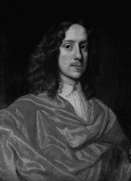

3. Bölüm
Orlando’nun kariyerinin bu aşamasında, ülkesinin toplum yaşamında çok önemli bir rol oynadığı sırada, işimize yarayacak pek az bilgiye sahip olmamız gerçekten de talihsizlik ve pek yazık. Görevlerini mükemmel yerine getirdiğini biliyoruz – Bath Nişanı alması ve Dük yapılması bunun kanıtıdır. Kral Charles ile Türkler arasında yürütülen en hassas görüşmelerde onun parmağının olduğunu biliyoruz – bunun kanıtı Arşiv Bürosu’nun kasasındaki antlaşmalardır. Ama onun görev döneminde patlak veren devrim ve arkasından gelen yangın, güvenilir kayıtların sağlanabileceği bütün belgelere öyle zarar vermiş ya da tahrip etmiştir ki bizim sunabileceklerimiz ne yazık ki pek eksik kalıyor. Çoğunlukla belgenin en önemli cümlesinin tam ortası yanıp kavrulmuş. Tarihçilerin yüz yıldır çözmeye çalıştıkları bir sırrı aydınlattığımızı düşünürken belgede parmağımızın geçeceği büyüklükte bir delik olduğunu görüyorduk. Geriye kalan kömürleşmiş parçalardan az da olsa bir şeyler sağlamak için elimizden geleni yaptık; ama çoğunlukla tahminlerde bulunmak, varsaymak, hatta hayalgücünü kullanmak gerekti.
Görünüşe göre Orlando gününü aşağı yukarı anlatacağımız şekilde geçiriyordu. Saat yedi civarında kalkıyor, sırtına Türk işi uzun bir kaftan geçiriyor, bir puro yakıyor, sonra dirseklerini balkon korkuluğuna dayıyordu. Böylece durup, büyülenmiş gibi aşağıdaki şehri seyrediyordu. O saatte sis o kadar yoğun olurdu ki, Aya Sofya’nın ve başka yerlerin kubbeleri siste yüzer gibi görünür, sisin içinden yavaş yavaş ortaya çıkarlardı; kabarcıklar oldukları yerde sabit gibiydiler; şurada Boğaz vardı; şurada da Galata Köprüsü; orada gözleri ya da burunları olmayan, dilenen yeşil türbanlı hacılar; şurada sakatatları yiyen sokak köpekleri; şurada çarşaflı kadınlar; şurada sayısız eşek; şurada da ellerinde uzun sırıklarla at sırtında giden adamlar. Çok geçmeden kırbaçların şaklaması, gong sesleri, ezanlar, katırların kamçılanması, pirinç çemberli tekerleklerin takırtısı bütün şehri harekete geçirir, mayalanan ekmeklerden ve tütsülerden ve baharatlardan gelen ve tiz sesli, rengârenk, barbar halkın soluğuymuş gibi görünen ekşi kokular tepelerdeki Pera’ya kadar bile yükselirdi.
Güneşte pırıl pırıl parlamaya başlayan manzaraya gözlerini dikerek, Surrey ve Kent kontluklarına ya da Londra ve Tunbridge Wells şehirlerine bu kadar az benzeyen yer yoktur, diye düşündü. Sağda ve solda, arada bir-iki hırsızbaşının kasvetli şatosunun da görülebileceği çıplak, taşlık, itici Asya dağları göz alıyordu; ama ne bir papaz evi vardı ne de malikâne, kulübe, meşe ağacı, karaağaç, menekşe, sarmaşık ya da yaban gülü. Üzerinde eğreltiotlarının dal budak sarabileceği çitler yoktu, koyunların otlayacağı çayırlar da. Evler yumurta kabuğu gibi bembeyazdı, bir o kadar da çıplak. Onun gibi köküne kadar İngiliz olan birinin bu vahşi panoramaya bakıp yüreğinin ta içinden coşku duyması, o dağ geçitlerine ve uzak tepelere gözlerini dikip daha önce çobanlarla koyunlardan başka kimsenin gitmediği o yerlere tek başına yayan yolculuklar yapmayı planlaması; mevsiminden önce açmış o parlak çiçeklerden etkilenmesi, o sokak köpeklerini kendi evindeki av köpeklerinden bile çok sevmesi, sokakların ekşi, keskin kokusunu hevesle soluması Orlando’yu şaşırtıyordu. Haçlı Seferleri döneminde acaba atalarımdan biri bir Çerkez köylü kadınla birlikte oldu mu diye merak ediyordu; mümkün olacağını düşündü; benim tenim de esmer sayılabilir diye düşünürdü; içeriye döndü, banyoya girdi.
Bir saat sonra kokular sürünmüş, saçlarını kıvırmış ve kremlenmiş olarak, sadece kendi altın anahtarıyla açılan kırmızı kutuları birer birer getiren sekreterleri ve diğer yüksek rütbeli görevlileri kabul ederdi. Kutularda çok önemli kâğıtlar olurdu, şimdi onlardan geriye, kâh bir süsleme, kâh yanık bir ipekli parçasına yapışmış bir mühür olarak kırıntılar kaldı. Demek ki kutularda neler bulunduğuyla ilgili bir şey söyleyemiyoruz, sadece Orlando’nun, belki otuz kap yemekten oluşan muhteşem öğle yemeğine kadar, balmumları ve mühürlerle, farklı şekillerde bağlanması gereken çeşitli renklerdeki kurdelelerle, iri harflerle yazdığı başlıklarla ve büyük harflerin etrafını süslemekle çok meşgul olduğunu söyleyebiliriz.
Öğle yemeğinden sonra uşaklar altı atlı arabasının kapıda olduğunu söylerlerdi, arabanın önünden yayan yürüyen ve başlarının üstünde büyük devekuşu tüylerinden yapılma yelpazeleri sallayan mor giysili yeniçerilerin arkasından diğer büyükelçileri ve devlet erkânını ziyarete giderdi. Tören hep aynı olurdu. Sarayın avlusuna varınca yeniçeriler ellerindeki yelpazeleri ana kapıya vururlar, kapı hemen açılır, muhteşem döşenmiş bir salon görünürdü. Orada genellikle biri kadın biri erkek iki kişi otururdu. Yerlere kadar eğilerek selamlar verilir, nazik sözler edilirdi. İlk salonda sadece havadan söz edilebilirdi. Büyükelçi havanın güzel ya da yağmurlu, sıcak ya da soğuk olduğunu söyledikten sonra Orlando öbür odaya geçerdi, orada da onu iki kişi karşılardı. O odada sadece ikamet edilecek yer bağlamında İstanbul’un Londra ile karşılaştırılmasına izin vardı; Büyükelçi elbette İstanbul’u yeğlediğini söylerdi, evsahipleri de, görmemiş olsalar da elbette Londra’yı tercih ederlerdi. Bir sonraki salonda Kral Charles ile Sultan’ın sağlıkları hakkında uzun uzadıya konuşulurdu. Bir sonrakinde Büyükelçi’nin ve evsahibinin karısının sağlıkları sohbet konusuydu, ama daha kısa olarak. Bir sonraki salonda Büyükelçi, mobilyaları için evsahibine, evsahibi de giysileri için konuğuna iltifatlar ederdi. Bir sonraki salonda tatlı etler sunulur, evsahibi onların kötü olduğundan yakınır, Büyükelçi de överdi. Sonunda bu tören nargile ve bir fincan kahve içilerek bitirilirdi; ancak nargile ya da kahve içme işi titizlikle yerine getirilse de ne nargilede tütün ne de fincanda kahve olurdu, çünkü gerçekten nargile ya da kahve içselerdi bu aşırı tıkınmaya insan dayanamazdı. Büyükelçi bu ziyaretlerin birini tamamlar tamamlamaz bir sonraki başlardı. Aynı seremoniler öbür yüksek dereceli görevlilerin evlerinde tamı tamına aynı sırayla altı yedi kez yinelenirdi, öyle ki Büyükelçi evine ancak gecenin ilerlemiş bir saatinde dönebilirdi. Orlando görevlerini mükemmel yerine getirse de ve onların bir diplomatın görevlerinin belki de en önemli kısmını oluşturduğunu yadsımasa da kuşkusuz yoruluyordu bütün bunlardan, çoğunlukla canı öyle sıkılıyor, içini öyle bir sıkıntı kaplıyordu ki, akşam yemeğini yerken yanına köpeklerinden başkasını almıyordu. Onlarla kendi dilinde konuştuğu duyulabiliyordu. Bazen de gece geç saatte, nöbetçilerin bile tanıyamayacağı şekilde kılık değiştirip dışarı çıktığı söyleniyordu. Galata Köprüsü’ndeki kalabalığa karışıyordu; ya da pazarlarda dolaşıyordu; ya da ayakkabılarını çıkarıp camilere giriyor, namaz kılanlara katılıyordu. Bir keresinde yüksek ateşle hastalandığı duyurulduğunda pazara koyunlarını getiren çobanlar dağın tepesinde bir İngiliz Lordu’yla karşılaştıklarını, onun Tanrısına dua ettiğini söylemişlerdi. Bunun Orlando olduğu sanılıyordu, dua dedikleri de kuşkusuz yüksek sesle okuduğu bir şiirdi, çünkü onun, pelerininin altında epeyce yıpranmış bir elyazmasını hâlâ taşıdığı biliniyordu; Büyükelçi odasında yalnızken onun kapısını dinleyen uşaklar, tuhaf, monoton bir sesle bir şeyler söylediğini duymuşlardı.

Orlando Büyükelçiyken
Orlando’nun o dönemdeki hayatı ve kişiliği hakkında bir resim oluşturabilmek için bunun gibi küçük parçaları kullanarak elimizden geleni yapmak zorundayız. Onun İstanbul’daki hayatı hakkında belirsiz ve doğrulanmamış rivayetler, efsaneler, anekdotlar bugün bile var – (sadece birkaç tanesini aktardık) bunlar, hayatının altın çağını yaşarken, merak uyandırıp gözleri üzerine çekme gücüne sahip olduğunu kanıtlıyor, ki bir anının taze kalmasını, çok daha kalıcı nitelikler unutulduktan sonra bile o güç sağlar. O güç, güzellik, soyluluk ve adına göz kamaştırıcılık dememizin yeteceği az bulunur bir yetenekten oluşan gizemli bir şeydir. Saşa’nın dediği gibi, “bir milyon mum” yanıyordu içinde, bir tekini bile kendi yakma zahmetine girmemiş olsa da. Bacaklarını kendine dert etmeden bir erkek geyik gibi dolaşıyordu. Her zamanki sesiyle konuşuyordu ve yankısı gümüş bir gonk sesi gibi çınlıyordu. Böylece söylentiler birikti etrafında. Onunla konuşmalarına, hatta onu görmelerine gerek yoktu; özellikle de manzara romantikse ya da güneş batmaktaysa gözlerinin önüne ipek çoraplı soylu bir beyefendiyi getiriyorlardı. Yoksul ve eğitimsiz kişileri de tıpkı zenginleri olduğu gibi etkiliyordu. Çobanlar, Çingeneler, eşekçiler, hâlâ “zümrütlerini kuyuya atan” İngiliz Lordu’yla ilgili şarkılar söylerler, kuşkusuz Orlando’yu ima ediyorlardır, görünüşe bakılırsa bu kişi bir seferinde, bir öfke ya da sarhoşluk anında üzerindeki mücevherleri koparmış ve onları bir kuyuya atmış; genç bir uşak da onları oradan almış. Ama bu romantik gücün çoğunlukla aşırı çekingen bir mizaçla bağlantılı olduğu bilinir. Görünüşe göre Orlando kimseyle arkadaşlık kuramamış. Bilindiği kadarıyla kimseye de bağlanmamış. Onun yanında olmak için ta İngiltere’den önemli bir hanımefendi gelmiş, üstüne düşüp bezdirmiş onu, ama Orlando görevlerini yorulmak nedir bilmeden yerine getirmeyi sürdürmüş, Altın Boynuz’a Büyükelçi olarak gelmesinin üzerinden daha iki buçuk yıl geçmeden Kral Charles onu soylular arasında en üst rütbeye çıkarma niyetini belli etmiş. Onu kıskananlar bunun, Nell Gwyn’in unutamadığı bir bacağın anısına gösterdiği saygı sayesinde olduğunu söylediler. Ama kadın onu sadece bir tek kez gördüğünden, o zaman da asil efendisini fındık kabuğu yağmuruna tutmuş olduğundan ona dük rütbesini kazandıranın bacakları değil de meziyetleri olması daha olası.
Burada bir ara vermemiz gerekiyor, çünkü onun mesleğinin çok önemli bir ânına geldik. Çünkü ona dük unvanı verilmesi, çok bilinen ve gerçekten de fazlasıyla tartışmalı bir olay nedeniyleydi, yanık kâğıtların, parça parça kayıtların arasında kendimize yol açarken şimdi elimizden geldiğince anlatmalıyız bunu. Bath Nişanı ve soyluluk belgesi, Sir Adrian Scrope komutasında bir firkateynle geldiğinde Ramazan ayının sonuydu; Orlando bu fırsattan yararlanıp İstanbul’un o güne kadar gördüğü bütün eğlencelerden çok daha muhteşem bir eğlence düzenledi. Güzel bir geceydi, müthiş bir kalabalık vardı, elçiliğin camları pırıl pırıl aydınlatılmıştı. Yine ayrıntılar eksik, çünkü bu tür kayıtları da yangın yok etti, geriye sadece umut kırıcı parçalar kaldı, onlar da en önemli hususları karanlıkta bırakıyor. Konuklar arasında bulunan İngiliz deniz subayı John Fenner Brigge’nin günlüğünden, her milletten insanların avluda “bir fıçıya doldurulmuş ringa balıkları” gibi sıkış tepiş toplandıklarını anlıyoruz. Kalabalık öyle sıkıştırıp rahatsız etmiş ki, Brigge olan biteni daha iyi görebilmek için çok geçmeden bir erguvan ağacına tırmanmış. Yerli halk arasında, bir tür mucize (işte burada da Orlando’nun hayalgücü üzerindeki gizemli etkisiyle ilgili ek kanıt bulunuyor) sergileneceğine dair bir söylenti dolaşıyormuş. “Böylece” diye yazıyor Brigge (ama elyazması yanıklarla ve deliklerle dolu, bazı cümleler hiç okunamıyor) “havai fişekler fırlamaya başlayınca yerli halkın... diye epeyce tedirginlik duyduk... herkes için nahoş sonuçlar... Aramızda İngiliz hanımefendiler olduğundan, elim palama gitti, doğru. Bereket,” diye devam ediyor Brigge, lafı uzatarak, “bu korkular o an için temelsiz göründüler, ve yerli halkın tavırlarını görünce... havai fişek atma sanatındaki bu becerimizi sergilemenin önemli olduğu kararına vardım, salt İngilizlerin üstünlüğünü onların kafasına sokmak için olsa bile... gerçekten de anlatılmaz bir ihtişam vardı o manzarada. Kâh izin verdiği için Tanrı’ya övgüler yağdırıyordum... ve keşke zavallı, sevgili annem... Büyükelçinin emriyle, pek çok bakımdan cahil olsalar da... Doğu mimarisinin özelliğini taşıyan yüksek pencereler ardına kadar açıktı; içerde bir tableau vivant14 ya da tiyatro oyunu görüyorduk, İngiliz hanımlar ve beyefendiler... elinden çıkmış bir maskeli piyesi oynuyorlardı... Kelimeler anlaşılamıyordu, ama son derece zarif ve seçkin giyimli, erkekli kadınlı pek çok vatandaşımızı görmek... kesinlikle utanmadığım duygulara kapılmama neden oldu, ama ben... Leydi... nin şaşırtıcı tavırlarını gözlemlemekle meşguldüm... tavrı herkesin bakışlarını üzerine topluyor, hemcinslerine ve ülkesine leke sürüyordu,” – ne yazık ki erguvan ağacının bir dalı kırılmış, yüzbaşı Brigge yere düşmüş, kaydın geri kalanında sadece onun (günlükte büyük bir rolü bulunan) kadere duyduğu minneti yazılı, bir de aldığı yaraların neler olduğu.
Bereket General Hartopp’un kızı olan Miss Penelope Hartopp o sahneyi içeriden görmüş ve hikâyeyi –o da çok silikti– bir mektupta anlatmış, mektup sonunda Tunbridge Wells’teki bir kız arkadaşının eline ulaşmış. Miss Penelope coşkuda o yürekli subaydan geri kalmıyordu. “Büyüleyici” diye yazıyor bir sayfada on kez, “harika... anlatılır gibi değil... altın tabaklar... şamdanlar... kadife pantolonlu zenciler... buzdan piramitler... negüs15 çeşmeleri... Majestelerinin gemilerini temsil eden pelteler... nilüferleri temsil eden kuğular... altın kafeslerde kuşlar... yırtmaçlı kızıl kadifeler içinde beyefendiler... hanımefendilerin en az bir metre seksen boyundaki saç tuvaletleri... müzik kutuları... Mr. Peregrine çok güzel göründüğümü söyledi, bunu bir tek sana tekrarlıyorum canım, çünkü biliyorum ki... Ah, nasıl da istedim hepinizin burada olmasını! ... Pantiles’te gördüğümüz her şeyin çok üstünde... okyanus dolusu içecekler... bazı beyefendiler yenilip... Leydi Betty büyüleyici... Zavallı Leydi Bonham yanlışlıkla altında iskemlesi yokken oturdu... Beyefendilerin hepsi kibar... binlerce kez yanımda olmanızı istedim senin ve sevgili Betsy’nin... ama görüleceklerin en önemlisi, bütün bakışların toplandığı kişi... herkes kabul ediyor bunu, çünkü kimse bunu yadsıyacak kadar kötü niyetli olamaz, Büyükelçinin kendisiydi. Ne biçim bacaklar! Ne biçim bir yüz! Nasıl da soylu tavırlar!!! Salona girişini görmek! Tekrar dışarı çıkışını görmek! Yüzünün ifadesinde ilginç bir şey var, insan nedenini bilemese de onun acı çekmiş olduğunu hissediyor! Nedenin bir kadın olduğu söyleniyor. Kalpsiz canavar!!! Sözde sevecen diye bilinen hemcinslerimizden biri nasıl böyle küstah olabilmiş!!! Evli değil, saraydaki hanımların yarısı onun için deli oluyor... Tom, Gerry, Peter ve sevgili Mew’e [herhalde kedisi bu] binlerce öpücük.
Günün gazetesinden “saat on ikiyi vurduğunda Büyükel-çinin tam ortadaki, paha biçilmez halılar asılı balkonda göründüğünü” öğreniyoruz. “Saray Muhafızlarından, her biri bir seksenin üzerinde olan altı Türk onun sağında ve solunda meşaleler tutuyorlardı. O görününce havai fişekler atıldı, halk bağırmaya başladı, Büyükelçi de yerlere kadar eğilerek onları selamladı, Türkçe olarak birkaç kelimeyle teşekkür etti, böyle akıcı konuşmak onun hünerlerinden biriydi. Sonra İngiliz amirali üniforması giymiş olan Sir Adrian Scrope yaklaştı; Büyükelçi bir dizinin üzerine çöktü, amiral İngiliz Bath Nişanı’nın gerdanlığını onun boynuna taktı ve göğsüne yıldızı iğneledi; sonra diplomatik heyetten bir başka beyefendi heybetli adımlarla yaklaştı, onun omuzlarına dükalık pelerinini yerleştirdi, kırmızı bir yastık üzerinde dükalık tacını sundu.”
Sonunda, abartılı bir ihtişam ve zarafetle, önce yerlere kadar eğilen sonra gururla doğrulan Orlando çilek yapraklarıyla süslü altın tacı aldı ve görenlerin bir daha unutmayacakları bir hareketle başına oturttu. İlk karışıklık tam o anda başladı. Ya insanlar bir mucize beklemişlerdi –bazıları gökten altın yağacak diye kehanette bulunmuşlardı– ki böyle bir şey olmadı, ya da saldırının başlaması için seçilmiş işaretti bu; bilen yok; ama taç Orlando’nun başına yerleşir yerleşmez büyük bir gürültü koptu. Çanlar çalmaya başladı, insanların bağırışları arasında kâhinlerin sert haykırışları duyuldu; pek çok Türk yere yapıştı ve alnını yere değdirdi. Bir kapı çarpılarak açıldı. Yerli halk ziyafet salonlarına doluştu. Kadınlar çığlık attı. Orlando’nun aşkından öldüğü söylenen bir hanım, şamdanın birini yakalayıp yere çarptı. Eğer Sir Adrian Scrope ve İngiliz denizcilerinden bir birlik orada olmasaydı neler olurdu kim bilir. Ama amiral borazanların çalınmasını emretti; yüz tane denizci hemen hazırola geçti; kargaşa yatıştırıldı ve en azından bir süreliğine ortalık sakinleşti.
Buraya kadar, doğrulanmış gerçeklerin dar ama sağlam zeminine basıyorduk. Ama o gecenin ilerleyen saatlerinde neler olduğunu bilen yok. Nöbetçilerin ve başka kişilerin ifadeleri Elçilikte kimsenin kalmadığını ve sabahın ikisinde her zamanki gibi kapıların kapatılıp kilitlendiğini kanıtlıyor. Büyükelçinin, mevkiinin nişanlarını hâlâ üzerinde taşıyarak odasına gidip kapısını kapattığı görülmüş. Kimileri kapısını kilitlediğini söylüyor ki, âdeti değilmiş bu. Kimileri de o gece daha geç bir saatte avluda, büyükelçinin penceresinin altında çobanlarınkine benzeyen kırsal müzik sesi duyulduğunda ısrarlılar. Dişi ağrıdığı için uyuyamayan bir çamaşırcı kadın, pelerin ya da sabahlığa benzer bir şey giymiş bir erkeğin balkona çıktığını görmüş. Sonra da sımsıkı örtülü, ama köylü olduğu anlaşılan bir kadın, erkeğin sarkıttığı bir halatla yukarı tırmanmış. O zaman, demiş çamaşırcı kadın, o ikisi iki âşık gibi kucaklaştılar, birlikte içeri girdiler, dışarıdan bir şey görülmesin diye perdeleri sımsıkı kapadılar.
Ertesi sabah, artık kendisine Dük dememiz gereken kişi, sekreterleri tarafından karmakarışık çarşafların arasında derin bir uykuda bulunmuştu. Oda da alt üstmüş, tacı yere yuvarlanmış, peleriniyle dizbağı üst üste bir koltuğa atılmıştı. Masanın üzerinde kâğıtlar yığılıydı. Gece epeyce yorucu geçtiğinden ilk başta kimse bir şeyden kuşkulanmadı. Ama ikindi olup da Dük hâlâ uyanmayınca bir doktor çağrıldı. Adam geçen sefer kullandığı tedaviyi uyguladı, yakı, ballıbaba, kusturucu ilaçlar, ama işe yaramadı. Orlando uyanmadı. O zaman sekreterleri masanın üzerindeki kâğıtları incelemeyi görev bildiler. Çoğuna şiirler çiziktirilmişti, şiirlerde sık sık bir meşe ağacının adı geçiyordu. Çeşitli devlet belgeleri ve Orlando’nun İngiltere’deki mülklerinin yönetimiyle ilgili kişisel belgeler de vardı. Sonunda çok daha önemli bir belgeye rastladılar. Bu, bir nikâh belgesiydi, Orlando’yla, yani Lord Hazretleri, Dizbağı Nişanı Şövalyesi falan filanla, babası bilinmeyen, ama Çingene olduğu söylenen, annesi de bilinmeyen, ama Galata Köprüsü’nün karşısındaki pazarda hurda demir sattığı söylenen, dansçı Rosina Pepita arasında. Sekreterler dehşet içinde bakıştılar. Orlando ise hâlâ uyuyordu. Sabah akşam gözlemlediler onu, ama düzenli aldığı soluklar ve her zamanki gibi koyu pembe yanakları dışında hiçbir yaşam belirtisi göstermiyordu. Onu uyandırmak için bütün bilimsel yolları denediler, bütün hünerlerini kullandılar ama uyanmadı.
Baygınlığının yedinci gününde (10 Mayıs Perşembe), Yüzbaşı Brigge’nin ilk belirtilerini sezdiği o korkunç ve kanlı ayaklanmayı başlatan ilk silah sesi duyuldu. Türkler Sultan’a başkaldırdılar, şehri ateşe verdiler, ellerine geçirdikleri bütün yabancıları ya kılıçla kestiler ya da falakaya yatırdılar. Birkaç İngiliz kaçmayı başardı; ama beklendiği üzere İngiliz Büyükelçiliği’ndeki beyefendiler kırmızı kutularını16 savunma uğruna ölmeyi yeğlediler, ya da aşırı örneklerde, hainlerin eline düşmesini görmektense deste deste anahtarı yuttular. İsyancılar Orlando’nun odasına daldılar, ama yatakta ölü gibi yattığını görünce ona dokunmadılar, sadece tacını ve Dizbağı Şövalyesi kıyafetini çaldılar.
Yine bilinmezlik çöküyor, keşke daha da fazla çökseydi! Neredeyse, öyle koyu bir bilinmezlik çökse de arasından hiçbir şey göremesek, diye bağırmak istiyoruz! Keşke burada kalemi elimize alıp, çalışmamızın altına SON yazabilseydik. Keşke okura bundan sonra olacakları duyurmasaydık ve ona Orlando’nun öldüğünü ve gömüldüğünü söyleyebilseydik. Ama heyhat, bu noktada Hakikat, Doğruluk, Dürüstlük, biyografi yazarını gözleyen ve mürekkep hokkasının yanında nöbet tutan hoşgörüsüz Tanrılar, olmaz diye bağırıyorlar. Gümüş borazanlarını dudaklarına dayayıp bir üfleyişte, Hakikat’i talep ediyorlar. Bir kez daha Hakikat diye bağırıyorlar, üçüncü kez bir ağızdan, Hakikat, sadece Hakikat, diye öttürüyorlar.
Bunun üzerine –çok şükür, çünkü soluk alacak zaman kalıyor bize– kapılar sanki çok narin, çok kutsal bir meltem esmişçesine usulca açılıyor ve içeri üç kişi giriyor. En öndeki Saffet Hanımefendi, alnında bembeyaz koyun yününden bir bant var; saçları, çağlayan gibi dökülen kar misali; ellerinde el değmemiş bir kazın ak tüyleri var. Arkasından, ama daha heybetli adımlarla İffet Hanımefendi geliyor, alnında, yanan ama sönmeyen bir ateş kulesi gibi buz saçaklarından yapılma bir taç var; gözleri birer parlak yıldız, parmaklarıysa daha değmeden iliklerine kadar donduruyor insanı. Tam arkasında, kendisinden daha heybetli kızkardeşlerinin gölgesine sığınan Terbiyeli Hanımefendi var, üçünün içinde en narin, en sarışın olanı; hilal incecik bir orak biçimindeyken ve bulutların arasında yarı kaybolmuşken ne kadar görünürse onun yüzü de ancak o kadar görünüyor. Üçü de odanın ortasına, Orlando’nun uyumakta olduğu yere yaklaşıyorlar; ilk konuşan, hem sevimli, hem buyurgan el kol hareketleriyle, Saffet Hanımefendi oluyor:
“Ben uyuyan yavru geyiklerin başını beklerim; karı severim; ve doğan ayı; ve gümüş denizi. Giysilerimle çilli tavuğun yumurtalarını örterim ve de çizgili deniz kabuklarını; kötülüğü ve yoksulluğu örterim. Narin ya da karanlık ya da kuşkulu her şeyin üzerine iner örtüm. Bu yüzden konuşma, hiçbir şeyi gösterme. Aman sakın!”
Burada borazanlar öter.
“Saffet çekil git! Saffet defol buradan!”
Sonra İffet Hanımefendi konuşur:
“Dokunuşum dondurur, bakışım taşa çevirir. Oynaşan yıldızı, düşen dalgayı durdurdum ben. Alplerin tepelerinde yaşarım, yürürken saçlarımda şimşekler çakar, gözüm neye değse öldürür. Orlando’yu uyandırmaktansa onu iliklerine kadar dondururum. Sakın, aman sakın!”
Burada borazanlar öter.
“İffet çekil git! İffet defol buradan!”
Sonra Terbiyeli Hanımefendi konuşur, ama öyle alçak sesle konuşur ki söyledikleri zor duyulur:
“Ben insanların Terbiyeli dediği kişiyim. Bakireyim ve hep öyle kalacağım. Verimli tarlalar ve bitek bağlar bana göre değil. Çoğalmaktan iğrenirim; elmalar tomurcuklanınca ya da hayvanlar doğurunca ben kaçarım; pelerinimle örtünürüm. Saçlarım gözlerimi gizler. Görmem. Sakın, aman sakın!”
Yine borazanlar çalar:
“Terbiyeli çekil git! Defol buradan Terbiyeli!”
Üç kızkardeş keder ve üzüntü belirten hareketlerle elele tutuşur ve ağır ağır dans ederler, tüllerini savurarak giderken şu şarkıyı söylerler:
“Hakikat, o korkunç ininden çıkma. İyice gizlen, korkak Hakikat. Çünkü sen, bilinmemesinin ve yapılmamasının daha iyi olacağı şeyleri acımasız güneşin altında ortaya koyuyorsun; utanılacak şeylerin örtüsünü kaldırıyor, karanlıkları aydınlatıyorsun, gizlen! Gizlen! Gizlen!”
Orlando’nun üzerine tüllerini örtecek gibi yapıyorlar. O arada borazanlar ötmeye devam ediyor.
“Hakikat, sadece Hakikat.”
Kızkardeşler borazanların seslerini boğmak istercesine tülleriyle onların ağızlarını örtmek istiyorlar, ama boşuna, çünkü bütün borazanlar hep birlikte ötüyorlar:
“Korkunç kızkardeşler, gidin!”
Kızkardeşlerin dikkati dağılıyor, üçü birlikte ağlayıp inliyorlar, bir yandan da daireler çizmeye, tüllerini bir aşağı bir yukarı savurmaya devam ediyorlar.
“Bu her zaman böyle değildi! Ama artık erkekler bizi istemiyor; kadınlar bizden nefret ediyor. Gidiyoruz; gidiyoruz. Ben (bunu söyleyen Saffet) tavuk tüneğine. Ben (bunu söyleyen İffet) Surrey’in henüz el değmemiş dağlarına. Ben (bunu söyleyen Terbiyeli) bolca sarmaşıklar ve perdeler olan sıcacık, huzurlu herhangi bir köşeye.”
“Çünkü burada değil, orada (üçü birden konuşuyorlar, el ele tutuşarak ve Orlando’nun uyuduğu yatağa doğru veda ve çaresizlik belirten işaretler yaparak), evlerde ve yatak odalarında, bürolarda ve mahkeme salonlarında bizi sevenler var hâlâ; bize saygı gösterenler, bakireler ve şehirliler; hukukçular ve doktorlar; yasaklayanlar; yadsıyanlar; nedenini bilmeden yüceltenler; anlamadan övenler; (çok şükür ki) sayısı hâlâ çok olan saygınlar grubu; görmemeyi yeğleyenler; bilmemek isteyenler; karanlığı sevenler; hâlâ bize tapanlar, ki nedensiz değil, çünkü biz onlara Servet verdik, Refah, Rahatlık, Kolaylık verdik. Onlara gidiyoruz, sizi terk ediyoruz. Gelin kardeşlerim, gelin! Burası bize göre bir yer değil.”
Bakmaya cesaret edemedikleri bir şeyi görmemek istercesine örtülerini başlarının üstünde sallayarak aceleyle çekiliyorlar, kapıyı arkalarından kapatıyorlar.
Böylece uyumakta olan Orlando ve borazancılarla salonda yalnız kalıyoruz şimdi. Yan yana düzenli bir sıra oluşturan borazancılar tek bir kez, müthiş bir sesle “HAKİKAT!” diye öttürüyorlar borazanlarını ve Orlando bu sese uyanıyor.
Gerindi. Yataktan kalktı. Çırılçıplak karşımızda durdu, borazanlar, Hakikat! Hakikat! Hakikat! diye öterken itiraf etmekten başka bir çaremiz kalmıyor – Orlando bir kadındı.
* * *
Borazanların sesi duyulmaz oldu, Orlando çırılçıplak ayakta durdu. Dünya kurulalı beri hiçbir insan ondan daha baş döndürücü görünmemiştir. Erkeğin gücüyle kadının zarafeti bir bedende birleşmişti. Orlando orada dururken, gümüş borazanlar, ötüşlerinin oluşturduğu o güzel görünümden ayrılmak istemezcesine çalışlarını uzattılar; kuşkusuz Merak’ın kışkırtmasıyla Saffet, İffet ve Terbiyeli kapıdan içerisini gözetlediler, bir giysiyi havlu gibi o çıplak bedene attılar, ama ne yazık ki giysi birkaç santim uzağa düştü. Orlando hiçbir telaş belirtisi göstermeden uzun bir boy aynasında kendisini baştan aşağı süzdü ve gitti, herhalde banyosuna.
Anlatımdaki bu soluklanmadan yararlanarak bazı şeyler söyleyebiliriz. Orlando kadın olmuştu – itiraz götürmeyecek biçimde. Ama başka her bakımdan eskiden nasılsa öyle kalmıştı. Cinsiyet değişimi geleceğini değiştirse de kimliğini hiç değiştirmemişti. İki durumda da suratı neredeyse aynı kalmıştı, portreleri bunun kanıtı. Erkek Orlando’nun belleği –ama bundan böyle ondan usul gereği kadın diye söz etmeliyiz, erkek diye değil– hiçbir engele takılmadan geçmiş hayatındaki bütün olayları taradı. Belleğin berrak havuzuna birkaç kara damla düşmüş gibi hafif bir bulanıklık olmuştur belki; bazı şeyler biraz puslanmıştı; ama hepsi bu. Değişiklik onun canını yakmadan ve eksiksiz tamamlanmış görünüyordu, öyle ki Orlando’nun kendisi bile şaşırmamıştı bu duruma. Bunu hesaba katan ve böyle bir cinsiyet değişiminin doğaya aykırı olduğunu söyleyen birçok kişi, (1) Orlando’nun önceden de kadın olduğunu, (2) Orlando’nun o sırada erkek olduğunu kanıtlamak için epey çaba harcadılar. Bize kalırsa biyologlar ve psikologlar karar versinler buna. Şu basit gerçeği ifade etmek bize yetiyor: Orlando otuz yaşına kadar erkekti; sonra kadın oldu ve ondan sonra hep öyle kaldı.
Ama bırakalım başka kalemler söz etsinler cinsiyetten ve cinsellikten; biz bu tür itici konulardan elimizden geldiğince çabuk ayrılıyoruz. Orlando yıkanmış, kadının da erkeğin de giydiği türden Türk işi cepken ve şalvar giymişti; durumunu gözden geçirmek zorundaydı. Orlando’nun hikâyesini sempatiyle izlemiş olan her okurun ilk düşüncesi, durumun güvenilmez ve son derece utandırıcı olduğu. Genç, soylu ve güzeldi, uyandığında kendini öyle bir konumda bulmuştu ki, mevki sahibi bir genç hanım için bundan daha hassas bir durum olamaz. Çıngırağı çalsaydı, çığlık atsaydı ya da bayılsaydı onu suçlayamazdık. Ama Orlando hiç de kaygılanmış görünmüyordu. Bütün hareketleri bilinçliydi, hatta önceden tasarlandığına yönelik işaretler gösterdiği düşünülebilirdi. Önce masanın üzerindeki kâğıtları dikkatle inceledi; şiire benzeyenleri aldı, koynunda sakladı; sonra, neredeyse açlıktan ölse de kaç gündür yatağının yanından ayrılmayan Silifke tazısını çağırdı, onu besleyip tüylerini taradı; sonra beline bir çift tabanca soktu; sonra büyükelçilik giysilerinin bir kısmını oluşturan birkaç dizi zümrütü ve Doğu’nun en güzel incilerini doladı boynuna. Bu iş de bitince, pencereden eğildi, alçak sesle ıslık çaldı, çöp kutusundan dökülen kâğıtların, anlaşmaların, pusulaların, mühürlerin, balmumlarının filan kapladığı harap, kan lekesi içindeki merdivenden indi, avluya çıktı. Orada, kocaman bir incir ağacının gölgesinde eşek sırtında bir Çingene beklemekteydi. Başka bir eşeği de yularından tutuyordu. Orlando bacağını eşeğin üzerinden aşırdı, böylece İngiltere’nin Osmanlı devletindeki büyükelçisi sıska bir köpeğin eşliğinde, eşek sırtında, yanında bir Çingene’yle İstanbul’dan ayrıldı.
Günlerce gecelerce gittiler, kimi insanların eliyle, kimi doğanın kucağında, Orlando’nun hepsinde cesaretini kanıtladığı çeşitli serüvenler yaşadılar. Bir hafta içinde Bursa’nın dışındaki tepelik bölgeye ulaştılar, o zamanlar Çingeneler çadırlarını topluca orada kurarlardı, Orlando da onlara katılmıştı. Eskiden Elçilikteki balkonundan o dağlara sık sık bakardı; sık sık orada olmayı arzulamıştı; insanın kendini hep olmayı arzuladığı yerde bulması işleyen bir zihne düşünecek malzeme sağlar. Ama bir süre bu değişiklikten öylesine hoşnuttu ki düşünerek tadını kaçırmak istemedi. Mühür vurulacak belgelerin, tumturaklı konuşmaların, yapılacak ziyaretlerin olmamasının verdiği keyif yeterli oldu. Çingeneler çayır çayır dolaşıyorlardı; bir çayırdaki otlar tükenince yollarına devam ediyorlardı. Orlando ancak ırmaklarda yıkanıyordu, tabii yıkanacak olursa; kırmızı, mavi, yeşil kutular sunulmuyordu ona; bütün kampta, bırakın altından olanı, hiçbir anahtar bulunmuyordu; ziyaret sözcüğünü ise bilen yoktu. Orlando keçileri sağıyordu; çalı çırpı topluyordu; ara sıra tavuk yumurtası çalıyordu, ama yerine hep ya para ya da bir inci koyuyordu; sürüleri güdüyordu; asmaları buduyordu; üzümleri eziyordu; keçi derisine su koyup içiyordu; günün yaklaşık bu saatinde, boş bir fincandaki kahveyi ve içinde tütün olmayan pipoyu içer gibi yapmış olacağını hatırlayınca kahkahayla gülüyordu, kendine iri bir parça ekmek daha koparıp ihtiyar Rüstem’in piposundan, inek gübresiyle doldurulmuş olsa da, bir nefes daha çekmek için yalvarıyordu.
Belli ki ayaklanmadan önce gizlice temasta olduğu Çingeneler ona kendilerinden biriymiş gibi bakmış olmalılar (bir halkın yapacağı en büyük iltifat budur), siyah saçları ve esmer teni de onlardan biri olarak doğduğuna Çingeneleri inandırıyordu, bir İngiliz dükün onu bebekken bir fındık ağacından alıp kaçırdığına, insanların açık havada kalamayacak kadar zayıf ve hastalıklı olduklarından evlerin içinde yaşadıkları o barbar ülkeye götürüldüğüne inanıyorlardı. Böylece, pek çok açıdan ondan üstün olsalar da kendilerine daha çok benzemesi için ona yardım etmeye gönüllü oldular; ona peynir yapmayı, sepet örmeyi, hırsızlığı, kuş avlamayı öğrettiler, hatta içlerinden biriyle evlenmesine rıza göstermeye bile hazırdılar.
Ama Orlando İngiltere’de bazı alışkanlıklar ve hastalıklar edinmişti (nasıl isterseniz öyle yorumlayın), görünüşe göre bunlardan kurtulamayacaktı. Bir akşam, kamp ateşinin etrafına toplanmış otururlarken, Tesalya dağlarının arkasında güneş kızıl ışıltılarla battığı sırada Orlando, “Yemesi iyi!” diye bağırdı. (Çingenelerde “güzel” sözcüğü yoktur. En yakını budur.)
Bütün genç kızlar ve delikanlılar katıla katıla güldüler. Gökyüzünü yemesi iyiydi, ha! Ama yaşlılar kuşkulandılar, onlar gençlerden daha fazla sayıda yabancı görmüşlerdi. Orlando’nun saatlerce hiçbir şey yapmadan oturduğunu fark ettiler, sadece sağa sola bakıyordu; onu bir tepede, keçilerin otlayıp otlamadığına bakmadan, başıboş dolaşmalarına aldırmadan gözlerini karşıya dikmiş halde buluyorlardı. Onun inancının kendilerinkinden farklı olduğundan kuşkulanmaya başladılar, kabilenin yaşlı kadınları ve erkekleri, onun tanrıların en kötüsünün, en gaddarının, yani Doğa’nın pençesine düşmüş olabileceğini düşündüler. Pek de yanılmıyorlardı. İngiliz hastalığı olan Doğa sevgisi onun içinde vardı ve Doğa’nın İngiltere’den çok daha geniş, çok daha güçlü olduğu burada, hiç olmadığı kadar tutulmuştu o hastalığa. Çok iyi bilinen bir hastalıktı bu ve ne yazık ki sıkça betimlenmişti, bu yüzden yeniden betimlenmesine gerek yok, değinip geçeceğiz. Dağlar vardı, vadiler vardı, ırmaklar vardı. Orlando dağlara tırmandı; vadilerde dolaştı; ırmakların kıyısına oturdu. Tepeleri surlara benzetti, güvercinlerin göğüslerine ve sığırların böğürlerine. Çiçekleri emayeyle kıyasladı, çayırları da eprimiş Türk malı kilimlerle. Ağaçlar kurumuş kocakarılardı, koyunlarsa iri, gri kayalar. Aslında her şey bir başka şeydi. Dağın tepesinde gölü buldu, orada saklandığını sandığı bilgeliği aramak için neredeyse içine atlıyordu; dağın tepesinden uzaklara, Marmara Denizi’nin ötesine, Yunanistan’ın düzlüklerine baktığında, orada (gözleri müthişti) bir-iki beyaz çizgisiyle, ki bunun Parthenon olduğunu düşünüyordu, Akropolis’i seçtiğinde, ruhu da gözleri gibi genişledi ve bütün böyle inananlar gibi dağların ihtişamını paylaşabilmek, ovaların sükûnetini tanıyabilmek için dua etti. Aşağıya baktığında kırmızı sümbülleri ve mor irisleri gördü, doğanın iyiliği, güzelliği karşısında kendinden geçerek bağırdı; tekrar gözlerini kaldırınca havalanan kartalı gördü, onun yakaladığı şeyleri hayal edip hepsini sahiplendi. Eve dönünce sadece kendisine işaret veriyorlarmış gibi her bir yıldızı, her tepeyi, nöbetçilerin ısınmak için yaktıkları her ateşi selamladı; nihayet, Çingenelerin çadırında kendini şiltesinin üzerine atınca elinde olmadan yine, “Yemesi iyi! Yemesi iyi!” diye bağırmadan duramadı. (Çünkü tuhaf ama insanların iletişim kanalları öyle yetersiz ki “çok güzel” demek istediklerinde “yemesi iyi” diyebiliyorlar ancak ve tersini; yaşadıkları bir şeyi kendilerine saklamaktansa alay edilmeye ve yanlış anlaşılmaya katlanabiliyorlar.) Genç Çingeneler güldüler. Orlando’yu İstanbul’dan eşeğiyle getirmiş olan Rüstem el Sadi, sessiz kaldı. Burnu pala gibiydi; yanakları, sanki asırlarca demir bilye yağmuruna tutulmuş gibi yarık yarıktı; esmer ve keskin gözlüydü, oturduğu yerde nargilesini çekerken gözünü Orlando’dan ayırmıyordu. Onun Tanrısının Doğa olduğundan çok kuşkulanıyordu. Bir gün onu gözyaşları içinde buldu. Tanrısının Orlando’yu cezalandırıldığına yordu bunu ve ona hiç de şaşırmadığını söyledi. Orlando’ya sol elinin soğuktan kavrulmuş parmaklarını gösterdi; sağ ayağının üzerine kaya yuvarlanan yerini gösterdi. İşte, dedi, senin Tanrın insanlara bunu yapıyor. Orlando İngilizce sözcükler kullanarak, “Ama çok güzel” dediğinde Rüstem başını iki yana salladı; Orlando sözünü tekrarlayınca da öfkelendi. Kendisinin inandığı şeye Orlando’nun inanmadığını görmüştü, bu da onu, ne kadar bilge ve kadim olsa da, hiddetlendirmeye yetti.
Bu fikir ayrılığı, o güne kadar son derece mutlu olan Orlando’yu rahatsız etti. Doğa güzel mi yoksa acımasız mı diye düşünmeye başladı; sonra bu güzellik nasıl bir şey diye sordu kendine; nesnelerin içinde miydi yoksa sadece kendi içinde mi; böylece gerçekliğin doğasına geçti, o da onu hakikate götürdü, hakikat de Aşk’a, Arkadaşlık’a, Şiir’e (evindeyken, dağın tepesinde geçirdiği günlerde olduğu gibi); tek bir sözcüğünü bile kimseyle paylaşamadığı için bu düşünceler daha önce hiç olmadığı kadar kalemi ve mürekkebi arzulattı ona.
“Ah, keşke yazabilseydim!” diye haykırdı (yazan insanlar gibi kendini beğenmişti o da, ancak yazıya dökülen sözlerin paylaşılabildiğine inanıyordu). Mürekkebi yoktu; kâğıdı da pek azdı. Ama böğürtlenlerden ve şaraptan mürekkep üretti; “Meşe Ağacı”nın elyazmasının kenarında biraz yer ve içinde birkaç boşluk bularak, sözcükleri kısaltıp yazarak manzarayı uzun, uyaksız bir şiirle anlattı ve kendi kendisiyle bu Güzellik ve Hakikate dair az ve öz denebilecek bir diyaloğa girişti. Bu onu saatlerce mutlu etmeye yetti. Ancak Çingeneler kuşkulanmışlardı. Önce, onun süt sağmada ve peynir yapımında eskisi kadar becerikli olmadığını fark ettiler; ayrıca, yanıt vermeden önce sık sık duraklar olmuştu; bir keresinde de uyumakta olan bir Çingene çocuk onun gözlerini üzerinde hissederek dehşet içinde uyandı. Bu baskıyı bazen bütün kabile hissediyordu, yani düzinelerce yetişkin erkek ve kadın. Hangi işi yaparlarsa yapsınlar sanki ellerinde ufalanıp toz olduğunu hissediyorlardı (onların duyuları çok keskindir, sözcük dağarcıklarının çok üstündedir). Sepet ören yaşlı bir kadın, bir koyunun derisini yüzen bir oğlan çocuğu, şarkı söyleyerek ya da halinden hoşnut şekilde mırıldanarak işlerini görürlerken, Orlando kampa gelir, kendini ateşin yanına atar ve gözlerini alevlere dikerdi. Oradakilere bakmasına gerek bile olmazdı, yine de onlar yanlarına gelenin kuşkular içinde olduğunu hissederlerdi; (Çingene dilinden kabataslak bir çeviri yapıyoruz) bu kişi bir şeyi sırf yapmış olmak için yapmıyor; bakmış olmak için bakmıyor; bu kişi ne koyun derisine inanıyor ne de sepete; başka bir şey (bunu derken endişeyle çadırın çevresine baktılar) görüyor. O zaman, kadın ve çocuk, belirsiz ama son derece nahoş bir duyguya kapılırlardı. Sazları kırarlar, parmaklarını keserlerdi. Büyük bir öfkeye kapılırlardı. Orlando’nun çadırdan çıkıp gitmesini ve bir daha yanlarına yaklaşmamasını dilerlerdi. Şunu da kabul ediyorlardı ki Orlando yapı olarak neşeli ve istekli biriydi. Elindeki incilerden bir tanesi Bursa’daki en iyi keçi sürüsünü satın almaya yeterdi.
Yavaş yavaş Orlando kendisiyle Çingeneler arasında bir fark olduğunu hissetmeye başladı, evlenip ölene kadar onların arasında kalma konusunda bazen bu yüzden tereddüt ediyordu. İlk başta, kendisinin kadim ve uygar bir ırktan geldiğini, bu Çingenelerinse vahşilerden pek farkı bulunmayan cahil insanlar olduğunu söyleyerek açıklamaya çalıştı bunu. Bir gece ona İngiltere hakkında sorular sorarlarken kendini tutamayıp doğduğu evi gururla anlattı, 365 tane yatak odası bulunduğunu, dört-beş yüzyıldır ailesine ait olduğunu söyledi. Atalarının kont, hatta dük olduğunu ekledi. Bunu söylerken Çingenelerin yine tedirgin olduğunu gördü; ama daha önce kendisi doğanın güzelliğini överken olduğu kadar öfkeli değillerdi. Kibar davranıyorlardı, ancak basit bir aileden geldiğini ya da yoksul olduğunu açıklamak zorunda kalan bir yabancı karşısında terbiyeli kişiler ne kadar ilgiliyseler onlar da öyleydiler. Çadırdan çıkarken Rüstem peşinden geldi ve babası dük olsa da, anlattığı bütün o yatak odalarına ve mobilyalara sahip olsa da Orlando’nun kendine dert etmemesini söyledi. Bunun yüzünden hiç kimse onun hakkında kötü şeyler düşünmezdi. O zaman Orlando daha önce hiç olmadığı kadar utandı. Rüstem’le öteki Çingenelerin, dört-beş yüz yıllık bir geçmişe sahip olmanın berbat bir şey olduğunu düşündükleri belliydi. Onların ailelerinin geçmişi en azından iki ya da üç bin yıla dayanıyordu. Ataları İsa doğmadan yüzlerce yıl önce piramitleri inşa etmiş olan Çingeneler için Howardlarla Plantagenetlerin şeceresi17 Smithlerle Jonesların şeceresinden ne daha iyiydi ne de daha kötü; ikisi de önemsizdi. Ayrıca, bir çobanın soyunun kadim çağlara dayandığı bir yerde, eski bir soydan gelmenin özellikle unutulmaz ya da arzulanır bir yanı yoktu; serseriler de dilenciler de aynı konumdaydılar. Sonra, açık açık söylemeyecek kadar nazik olsa da, Çingenenin, bütün dünya bize aitken, yüzlerce yatak odasına sahip olmaktan daha aşağılık bir hırs olmadığını düşündüğü belliydi (bir tepenin üzerinde konuşuyorlardı; geceydi; çevrelerinde dağlar yükseliyordu). Çingenelerin bakış açısından bakınca bir dükün, insanların elinden pek az değer verdikleri topraklarını ve paralarını kapan, bir tanesi yeterliyken, hatta hiç olmaması daha iyiyken, üç yüz altmış beş yatak odası inşa ettiren bir vurguncudan ya da hayduttan başka bir şey sayılmadığını anladı Orlando. Atalarının tarla üstüne tarla, ev üstüne ev, rütbe üstüne rütbe koymuş olduklarını yadsıyamazdı; ama hiçbiri aziz de değildi kahraman da, ya da insanlığa büyük yararları dokunmamıştı. Atalarının üç ya da dört yüzyıl önce yaptığını şimdi yapan birinin –özellikle de kendi ailesi tarafından– aşağılık bir türedi, bir sergüzeşt, bir sonradan görme sayılacağı iddiasına (Rüstem bu konuda ısrar etmeyecek kadar kibardı ama Orlando anlıyordu) itiraz edemezdi.
Bu türden iddiaları yanıtlamaya çalışırken, lafı dolandırarak Çingenelerin hayatını kaba ve barbar bulduğunu söyledi; böylece, kısa sürede aralarında hatırı sayılır bir düşmanlık oluştu. Gerçekten de bu tür fikir ayrılıkları kan dökülmesi ve isyan için yeterlidir. Bundan daha azı için kasabalar yağmalanmıştır, burada tartışılan konuların herhangi birinde bir adım geri gitmemek için bir milyon kişi diri diri yanarak can vermiştir. İnsanın en büyük tutkusu, başkalarını kendi inandığı şeye inandırmaktır. Kendisinin değer verdiği bir şeye başkalarının hiç değer vermemesi kadar mutluluğunu kökünden sarsan, içini öfkeyle dolduran bir şey olamaz. Whiglerle Toryler, Liberal Partiyle İşçi Partisi – kendi saygınlıkları uğruna değil de ne uğruna savaşıyorlar? Semtleri karşı karşıya getiren, mahalleleri birbirinin çöküşü için dua etmeye yönelten hakikat sevgisi değil, üstün gelme arzusudur. Bunların her biri, hakikatin galip gelmesinin ve erdemlerin yüceltilmesinin değil de iç huzurunun ve itaatin peşindedir – ama bu ahlak dersleri tarihçiyi ilgilendirir ve ona bırakılmalıdır, çünkü hepsi de son derece sıkıcıdır.
“Dört yüz yetmiş altı yatak odasının onlar için bir anlamı yok,” diyerek iç geçirdi Orlando.
“Güneşin batışını bir keçi sürüsüne yeğler o,” dedi Çinge-neler.
Orlando ne yapması gerektiğini bilemiyordu. Çingenelerden ayrılıp yeniden büyükelçi olmayı dayanılmaz buluyordu. Ama ne mürekkep ne de yazacak kâğıt bulunan, ne Talbotlara ne de çok sayıdaki yatak odasına saygı duyulan bir yerde sonsuza kadar kalmak da aynı derecede olanaksızdı. Güzel bir sabah, Aynaroz Dağı’nın yamacında keçilerini güderken bunları düşünüyordu. Ve sonra güvendiği Doğa ya ona bir oyun oynadı ya da bir mucize doğurdu –bu konuda da farklı fikirler olduğundan hangisinin doğru olduğunu söyleyemiyoruz. Orlando kederler içinde önündeki dik yamaca dikmişti gözlerini. Yaz ortasıydı, o manzarayı bir şeyle karşılaştırmamız gerekirse kuru bir kemiğe benzetebiliriz; bir koyun iskeletine; binlerce akbabanın gagalaya gagalaya ağarttığı devasa bir kafatasına. Hava çok sıcaktı, altında oturduğu küçük incir ağacı Orlando’nun sırtındaki ince harmaninin üzerine ancak yapraklarının desenini düşürebiliyordu.
Birden, karşıdaki çıplak yamaca bir gölge vurdu, oysa etrafta gölge verecek bir şey yoktu. Gölge hemen koyulaştı ve çok geçmeden daha önce çıplak bir kaya olan yerde yeşil bir oyuk oluştu. Orlando bakarken o oyuk derinleşip genişledi ve tepenin yan yüzünde parka benzeyen büyük bir alan açıldı. Orlando orada zemini engebeli bir çimenlik gördü; şurada burada meşe ağaçları vardı; dalların arasında seken ardıç kuşlarını görebiliyordu. Bir gölgelikten ötekine zarifçe geçen geyikleri görüyordu, hatta böceklerin vızıltısını, İngiltere’deki bir yaz gününün yumuşak soluklarını ve ürpertilerini duyabiliyordu. Bir süre böyle büyülenmiş gibi etrafı seyrettikten sonra kar yağmaya başladı; çok geçmeden her yeri güneşin sarı ışıkları yerine mor gölgeler kaplayıp örttü. Yollarda yaklaşan, ağaç kütüğü yüklü ağır at arabalarını görebiliyordu şimdi, onların kesilip şöminede yakılacaklarını biliyordu; sonra kendi evinin çatıları ve çan kuleleri ve sivri kuleleri ve avluları göründü. Kesintisiz yağan karın çatıdan kayıp yere düşerken çıkardığı değişik sesleri duydu. Binlerce bacadan duman yükseliyordu. Her şey o kadar berrak ve ayrıntılıydı ki solucan bulmak için karları gagalayan küçük kargaları bile görebiliyordu. Sonra, yavaş yavaş mor gölgeler koyulaştı, arabaların, çimenlerin, hatta büyük evin üzerine indi. Her şeyi yuttu. Artık o çimenli oyuktan geriye bir şey kalmamıştı, yeşil çayırların yerinde sadece, binlerce yırtıcı kuşun gagalayarak çıplak bıraktığı dağın ışıldayan yamacı kalmıştı. O anda kendinden geçerek gözyaşlarına boğuldu, Çingenelerin kampına geri dönerek onlara hemen ertesi gün İngiltere’ye yelken açması gerektiğini söyledi.
Böyle yapması da iyi oldu onun için. Çünkü delikanlılar onu öldürmek için plan yapmışlardı. Onurumuz bunu gerektiriyor, demişlerdi, çünkü o kendileri gibi düşünmüyordu. Yine de boğazını kesmek üzecekti onları, bu yüzden gideceğini duyunca sevindiler. Şans eseri İngiltere’ye dönecek bir İngiliz ticaret gemisi limanda harekete hazırdı; gerdanlığından bir inci daha koparan Orlando yolculuğunun bedelini ödemekle kalmadı, birkaç banknot da cebine kaldı. Bu paraları Çingenelere vermeyi çok isterdi. Ama onların servetten nefret ettiklerini biliyordu; onlarla, kendi açısından yürekten gelen bir hareketle kucaklaşmakla yetindi.
14 Canlı tablo. Uygun kıyafetler içindeki bir grup oyuncunun sahnedeymişçesine poz verip kımıldamadan ve konuşmadan bir süre tablo gibi durmaları. Sahne sanatıyla fotoğrafı birleştiren bir sunum. (ç.n.)
15 Şarap ve sıcak su karışımı. (ç.n.)
16 Kırmızı kutu: İngiltere‘de bakanların ve yüksek dereceli devlet memurlarının resmi belgeleri sakladığı ve taşıdığı kutu. (ç.n.)
17 Eski İngiliz aileleri. İlki aristokrat, ikincisi kraliyet sülalesindendi. (ç.n.)